Instrukcja dla klienta (wprowadzająca)
Portal wiedzy, który zasila się sam — jak go uruchomić i jak nad nim panować
Dla kogo jest ta instrukcja?
Dla osoby, która prowadzi stronę internetową i chce, żeby przybywało na niej artykułów — bez pisania ich ręcznie.
Czy muszę znać się na komputerach?
Nie. Wszystko jest opisane po kolei, z obrazkami. Każdy obrazek pokazuje dokładnie to, co zobaczysz na swoim ekranie. Czerwona ramka na obrazku wskazuje miejsce, w które masz kliknąć.
Ile to zajmie?
Uruchomienie — około 15 minut. Potem wtyczka pracuje sama, a Ty tylko zaglądasz, co przybyło.
Wersja wtyczki {{WERSJA}}
Obrazki pochodzą ze strony przedszkola, na której wtyczka działa.
Na swojej stronie zobaczysz własne treści — układ ekranów będzie taki sam.
Instrukcja dzieli się na dwie części. Pierwszą przechodzisz raz, przy uruchomieniu. Drugiej używasz na co dzień.
Nie musisz uczyć się ich na pamięć — wracaj tutaj, gdy któreś pojawi się w tekście.
/wp-admin.Trzy rzeczy, których wtyczka nie zrobi nigdy. Nie utworzy dwóch artykułów z tego samego źródła. Nie opublikuje odpowiedzi, która nie przeszła sprawdzenia. Nie zatrzyma się na dobre z powodu jednego błędu — spróbuje ponownie przy następnym przebiegu.
Trzy rzeczy. Jeśli masz je pod ręką, uruchomienie zajmie kwadrans.
Plik z wtyczką
W paczce, którą dostałeś, leży plik ai-news-portal.zip. Nie rozpakowuj go — WordPress zrobi to sam.
Dostęp do kokpitu swojej strony
Login i hasło administratora — czyli takie, przy których w menu po lewej widzisz pozycję Wtyczki. Jeśli jej nie widzisz, poproś osobę, która zakładała Ci stronę.
Konto Google
Zwykłe konto Google — takie jak do poczty Gmail. Posłuży do wygenerowania darmowego klucza. Karta płatnicza nie jest potrzebna i nie będziesz o nią proszony.
Właściwie niczego. W odróżnieniu od zwykłych wtyczek treściowych nie czyta Twoich podstron ani wpisów — materiał bierze z zewnątrz, z kanałów RSS. Strona może być zupełnie nowa i pusta.
Potrzebuje natomiast ruchu: WordPress uruchamia zadania cykliczne tylko wtedy, gdy ktoś w danej chwili odwiedza witrynę. Wracamy do tego w rozdziale 11.
Uwaga. Ta instrukcja opisuje obsługę wtyczki. Sprawy techniczne po stronie serwera — wersja PHP, zadania cykliczne, limity — opisuje osobna Instrukcja dla informatyka (Functional).
W paczce są jeszcze trzy dokumenty techniczne: Wymagania niefunkcjonalne, Schema — format danych oraz Instrukcje systemowe. Jeśli oddajesz sprawę informatykowi, przekaż mu całą paczkę, a nie pojedynczy plik.
Pięć kliknięć. Nic nie da się tu zepsuć — wtyczkę zawsze można wyłączyć i wgrać ponownie.
Wejdź w „Wtyczki → Dodaj nową wtyczkę”
Zaloguj się do kokpitu. W menu po lewej kliknij Wtyczki, a potem Dodaj nową wtyczkę. U góry ekranu znajdziesz przycisk „Wyślij wtyczkę na serwer” — kliknij go.
Wskaż plik i zainstaluj
Kliknij „Wybierz plik”, odszukaj ai-news-portal.zip i zatwierdź. Gdy nazwa pliku pojawi się obok przycisku, kliknij „Zainstaluj”.
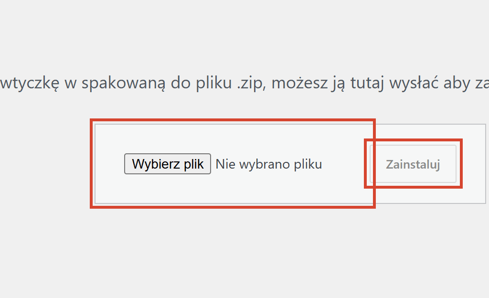
Włącz wtyczkę
Po instalacji zobaczysz komunikat o powodzeniu i odnośnik „Włącz wtyczkę”. Kliknij go. W menu po lewej pojawi się pozycja AI News Portal — to znak, że wszystko się udało.
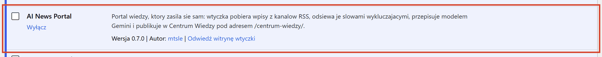
Włączenie wtyczki nie jest samym „dodaniem pozycji do menu”. Od razu, bez żadnego klikania, dzieje się pięć rzeczy:
/centrum-wiedzy/ odpowiada natychmiast.Czego wtyczka NIE robi przy włączeniu. Nie tworzy zwykłej Strony WordPressa, nie dopisuje się do menu i nie dotyka Twoich istniejących wpisów. Odnośnik w menu dodajesz sam — rozdział 7.
Gdy instalacja nie przechodzi. Komunikat o braku uprawnień albo o zbyt dużym pliku to ustawienie serwera, nie błąd wtyczki. Poproś wtedy informatyka — potrzebne wartości ma opisane w swojej instrukcji.
Klucz to hasło do sztucznej inteligencji Google. Jest darmowy, pobiera się go raz i wkleja w jedno pole.
Wejdź na stronę Google AI Studio
Adres: aistudio.google.com/apikey. Zaloguj się swoim kontem Google
i kliknij przycisk tworzenia klucza. Dostaniesz długi ciąg znaków — skopiuj go
w całości.
Wklej klucz w Ustawieniach wtyczki
W kokpicie: AI News Portal → Ustawienia, pole „Klucz API Gemini”. Wklej i zapisz.
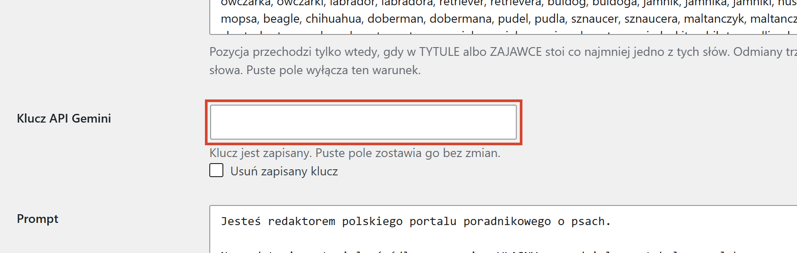
Sprawdź dobowy limit
Pole „Sufit wywołań AI na dobę” stoi domyślnie na 20 — dokładnie tyle, ile daje darmowy przydział Google. Wtyczka liczy wywołania sama i po osiągnięciu sufitu przestaje pytać model aż do następnej doby.
Bez klucza przycisk „Opublikuj teraz” jest wyszarzony i nie da się go kliknąć. To nie usterka — wtyczka nie ma czym napisać artykułu. Pobieranie i przygotowanie materiału działają bez klucza, bo nie korzystają z modelu.
Z kanałów RSS — czyli z list nowych tekstów, które inne strony wystawiają publicznie. Wtyczka ich nie kopiuje: czyta je i pisze własny artykuł.
Na świeżej instalacji lista jest już wypełniona czterema sprawdzonymi adresami — nie musisz niczego szukać, żeby ruszyć. Zobaczysz je w AI News Portal → Ustawienia, w polu „Kanały RSS”.
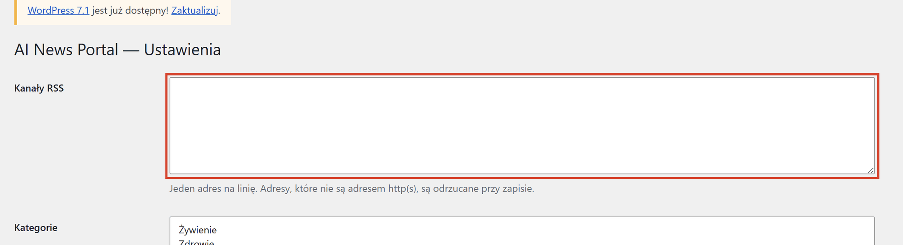
Dopisz adres w nowej linii i zapisz. Adres kanału zwykle kończy się na
/feed/ albo /rss — jeśli nie wiesz, sprawdź na stronie,
którą chcesz śledzić, albo spytaj informatyka.
Puste pole „Kanały RSS” wyłącza pobieranie
Jeśli skasujesz wszystkie adresy i zapiszesz, wtyczka uzna to za Twoją świadomą decyzję i przestanie pobierać cokolwiek. Nie przywróci wtedy domyślnej czwórki — panel wypisze tylko ostrzeżenie, że lista jest pusta.
Chcesz wrócić do stanu wyjściowego? Wpisz adresy z powrotem ręcznie.
Wtyczka nie pobiera cudzych zdjęć. Kartom artykułów przypisywane są zdjęcia kategorii, które jadą w paczce — dzięki temu portal nie narusza cudzych praw autorskich. Każda kategoria ma po kilka wariantów zdjęcia, więc sąsiadujące karty nie powtarzają się.
Wtyczka zrobi to sama, ale przy pierwszym uruchomieniu warto przejść drogę ręcznie — zobaczysz wtedy, co się dzieje na każdym etapie.
Wejdź w AI News Portal → Materiały. Zobaczysz trzy przyciski jeden pod drugim. Klikaj je w tej kolejności, od góry.
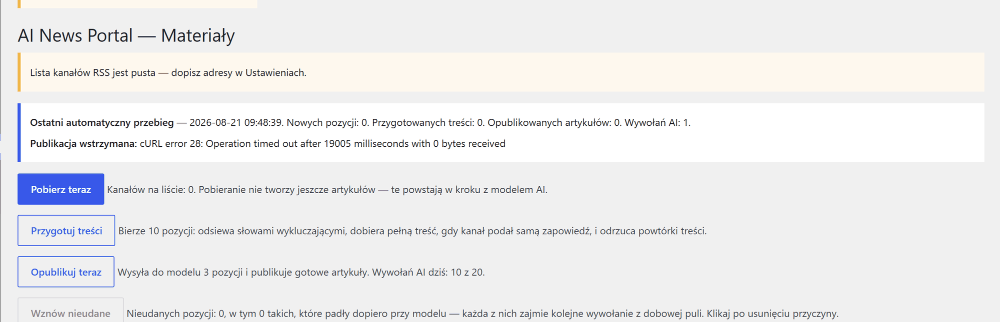
„Pobierz teraz” — zebranie pozycji
Wtyczka odwiedza kanały z listy i zapisuje wypatrzone teksty jako pozycje. Nie powstają jeszcze żadne artykuły i nie zużywasz ani jednego wywołania AI. Powtórki tego samego adresu są odrzucane od razu.
„Przygotuj treści” — odsianie i uzupełnienie
Wtyczka bierze porcję pozycji i robi z nimi trzy rzeczy: odrzuca te ze słowami wykluczającymi, dobiera pełną treść ze strony źródłowej, gdy kanał podał samą zapowiedź, i wyrzuca powtórki po treści. Nadal bez udziału AI — ten etap jest darmowy.
„Opublikuj teraz” — napisanie artykułów
Dopiero tutaj do gry wchodzi model. Bierze przygotowane pozycje, pisze na ich podstawie własny tekst, nadaje mu kategorię i publikuje w Centrum Wiedzy. Każdy artykuł to jedno wywołanie AI z Twojego dobowego przydziału.
Kliknąłeś „Opublikuj teraz” i nic się nie stało? To normalne na świeżej instalacji: publikacja bierze wyłącznie pozycje już przygotowane, a kolejka jest pusta, dopóki nie klikniesz dwóch pierwszych przycisków. Przejdź drogę od góry.
Nie musisz jej zakładać ani niczego klikać. W chwili, w której włączysz wtyczkę, strona już istnieje i już działa.
Adres, pod którym jej szukać
To Twój adres strony z dopiskiem /centrum-wiedzy/ — na przykład
twojastrona.pl/centrum-wiedzy/. Pojedynczy artykuł ma adres
/centrum-wiedzy/tytul-artykulu/, a widok jednej kategorii —
/centrum-wiedzy/kategoria/zywienie/.
Co na niej jest od pierwszej minuty
Wyszukiwarka, przyciski siedmiu kategorii i jeden artykuł powitalny, który wtyczka wstawia przy pierwszym włączeniu. Artykuł powitalny znika sam, gdy portal opublikuje pierwszy prawdziwy tekst — nie musisz go kasować. Kategorie pokazują się wszystkie, także te jeszcze puste, żeby odwiedzający od razu widział, o czym będzie portal.
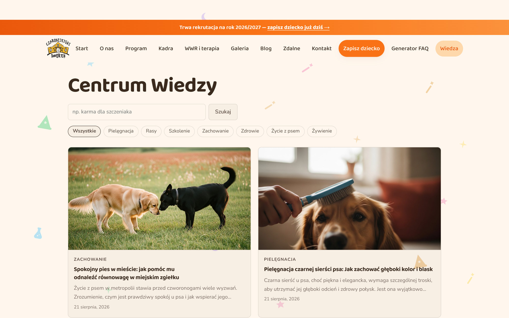
Strona bez odwiedzin nie pracuje. Wtyczka sięga po nowe materiały mniej więcej raz na godzinę, ale tylko wtedy, gdy ktoś w tym czasie wszedł na stronę. Tak działa WordPress i nie jest to usterka. Gdy witryna nie ma jeszcze ruchu, rozwiązanie opisuje Instrukcja dla informatyka (Functional).
Tytuł, data, kategoria, tekst — i ramka źródła z odnośnikiem do materiału, na podstawie którego artykuł powstał. Ta ramka jest ważna: pokazuje odwiedzającemu, skąd wziął się temat, i jest wyrazem uczciwości wobec autora oryginału.
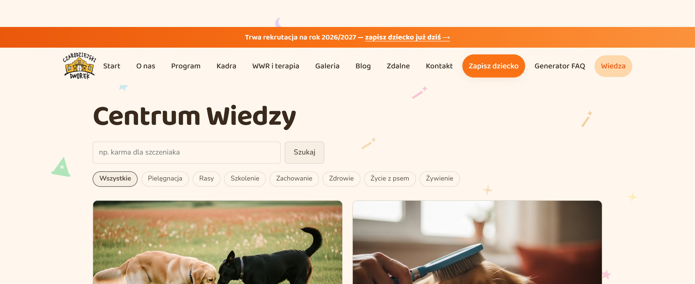
Kliknięcie kategorii zawęża listę do jej artykułów. Wyszukiwarka szuka wyłącznie w Centrum Wiedzy i nie miesza się z wyszukiwarką całej witryny — gość szukający artykułu nie dostanie w wynikach Twojego cennika.
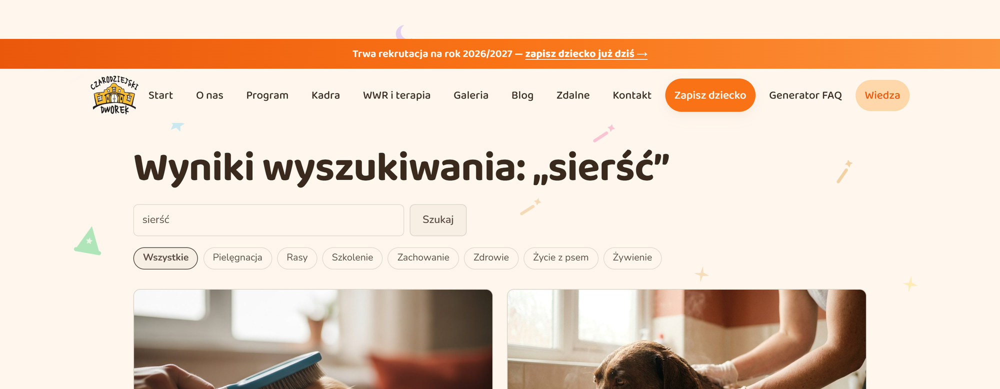
Wtyczka nigdy nie dopisuje się do Twojego menu. To decyzja, nie przeoczenie: menu jest Twoje i nic nie powinno w nim majstrować bez Twojej wiedzy. Dodanie odnośnika zajmuje minutę.
Wejdź w „Wygląd → Menu” i znajdź panel „Artykuły”
Po lewej stronie ekranu jest kolumna „Dodaj element menu” z rozwijanymi panelami: Strony, Wpisy, Artykuły, Własne odnośniki. Nie widzisz panelu Artykuły? Kliknij „Opcje ekranu” w prawym górnym rogu i zaznacz go — WordPress domyślnie ukrywa część paneli.
Rozwiń „Artykuły” i przejdź na „Zobacz wszystko”
Pozycji, której szukasz, nie ma w zakładce „Najnowsze” — jest tylko w „Zobacz wszystko”, na samej górze listy. Nazywa się Centrum Wiedzy. To odnośnik do całego portalu, a nie do pojedynczego artykułu.
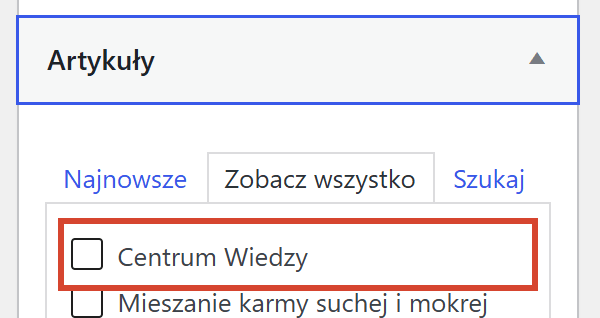
Zaznacz, dodaj i zapisz
Zaznacz kwadracik przy Centrum Wiedzy, kliknij „Dodaj do menu”, a na koniec „Zapisz menu”. Pozycja pojawi się na dole struktury menu z opisem „Archiwum typu treści” — to normalne.
Chcesz krótszej nazwy? Rozwiń dodaną pozycję strzałką po prawej i wpisz własną w polu „Etykieta nawigacji” — na obrazkach jest to Wiedza.
Wtyczka ma w kokpicie dokładnie dwie pozycje — Materiały i Ustawienia — i celowo nie dokłada trzeciej. Lista gotowych artykułów mieszka pod własnym adresem.
Adres listy artykułów
Wpisz w przeglądarce, będąc zalogowanym w kokpicie:
twojastrona.pl/wp-admin/edit.php?post_type=ainp_article
Warto dodać ten adres do zakładek — to jedyne miejsce, w którym poprawisz, ukryjesz albo skasujesz kilka artykułów naraz. Ten sam odnośnik znajdziesz na dole ekranu Materiały.
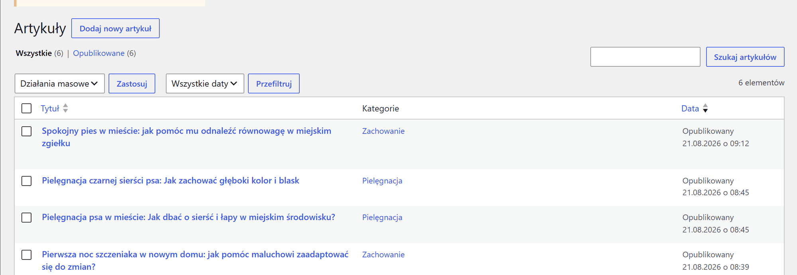
Co możesz z nimi zrobić
Artykuł jest zwykłym wpisem WordPressa — otworzysz go w tym samym edytorze, w którym piszesz resztę strony. Możesz poprawić tytuł, zmienić kategorię, przenieść do kosza albo cofnąć do szkicu, gdy nie chcesz go jeszcze pokazywać.
Zanim kiedykolwiek klikniesz „Usuń” przy tej wtyczce
Odinstalowanie wtyczki kasuje wszystkie wygenerowane artykuły — bezpowrotnie. Razem z nimi znikają kategorie portalu i cała kolejka zebranych materiałów. Nie ma po tym „cofnij”.
Samo wyłączenie wtyczki nie rusza niczego. Artykuły zostają w bazie i wrócą w komplecie, gdy wtyczkę włączysz z powrotem. Kasuje dopiero przycisk „Usuń” na liście wtyczek.
Na co dzień nie musisz tu zaglądać — portal pracuje sam. Zaglądasz, gdy chcesz sprawdzić, co się dzieje, albo gdy coś wygląda nie tak.
U góry ekranu Materiały stoi podsumowanie ostatniej samoczynnej pracy: data, ile pozycji przybyło, ile treści przygotowano, ile artykułów opublikowano i ile wywołań AI to kosztowało. To pierwsze miejsce, do którego warto zajrzeć.
| Status | Co znaczy |
|---|---|
| nowy | Pozycja zebrana z kanału, czeka na swoją kolej. Nic nie musisz robić. |
| w trakcie | Pozycja jest właśnie przerabiana. Widok przejściowy, trwa sekundy. |
| opublikowany | Powstał z niej artykuł. Znajdziesz go w Centrum Wiedzy. |
| pominięty | Odrzucona świadomie — kolumna Powód mówi dlaczego. Najczęściej: słowo wykluczające albo brak słowa wymaganego. |
| nieudany | Próba się nie powiodła. Treść zostaje w bazie, więc pozycję można wznowić bez pobierania jej od nowa. |
Dotyczy wyłącznie pozycji ze statusem nieudany, które padły dopiero przy modelu. Każda taka próba zajmie kolejne wywołanie z dobowego przydziału, więc klikaj po usunięciu przyczyny — na przykład po uzupełnieniu klucza.
Dużo pozycji „pominiętych” to dobry znak. Oznacza, że filtr pracuje i nie przepuszcza tekstów spoza tematu. Wtyczka nie zużywa na nie ani jednego wywołania AI — odsiewa je, zanim zapyta model.
Trzy pola w Ustawieniach decydują o tym, o czym portal pisze, a o czym milczy. Wszystkie trzy działają, zanim wtyczka zapyta model — czyli za darmo.
Lista, z której model musi wybrać jedną pozycję dla każdego artykułu. Nie wymyśli własnej: odpowiedź z kategorią spoza listy zostaje odrzucona.
Pole „Kategorie” w Ustawieniach — jedna kategoria w każdej linii. Zmiana listy działa od następnego artykułu; już opublikowanych nie przenosi.
Dwie listy odpowiadające na dwa różne pytania:
| Lista | Pytanie, na które odpowiada |
|---|---|
| Słowa wykluczające | „Czy to jest o czymś, czego nie chcę?” Trafienie w tytule, zapowiedzi lub treści odrzuca pozycję. Domyślnie na liście są m.in. inne zwierzęta, ogłoszenia i treści drażliwe. |
| Słowa wymagane | „Czy to w ogóle jest o moim temacie?” Pozycja musi mieć któreś z tych słów w tytule albo zapowiedzi, inaczej odpada. |
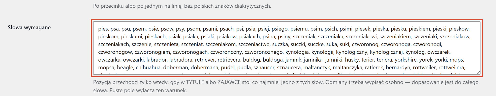
Puste pole „Słowa wymagane” wyłącza całą bramkę
Wtyczka przestanie wtedy sprawdzać, czy tekst jest w ogóle na temat — do portalu zaczną trafiać przypadkowe artykuły, każdy za jedno wywołanie AI z przydziału.
Najczęstsze sytuacje i co z nimi zrobić. Zaczynaj zawsze od ramki „Ostatni automatyczny przebieg” na ekranie Materiały.
| Objaw | Co zrobić |
|---|---|
| Artykuły nie przybywają, choć wtyczka jest włączona | Najczęstsza przyczyna: strona nie ma ruchu. WordPress uruchamia zadania cykliczne tylko przy odwiedzinach. Wejdź kilka razy na stronę albo poproś informatyka o ustawienie zadania cyklicznego po stronie serwera. |
| „Opublikuj teraz” klika się, ale nic nie powstaje | Kolejka nie ma przygotowanych pozycji. Kliknij najpierw „Pobierz teraz”, potem „Przygotuj treści”. |
| „Opublikuj teraz” jest wyszarzony | Brakuje klucza API. Uzupełnij go w Ustawieniach — rozdział 3. |
| W panelu: „Wyczerpany sufit dobowy wywołań AI” | Zużyłeś dzisiejszy przydział. Wtyczka wróci do pracy następnej doby. Nieudane i przerwane próby też liczą się do puli. |
| W panelu: „Lista kanałów RSS jest pusta” | Ktoś wyczyścił pole Kanały RSS. Wpisz adresy z powrotem — rozdział 4. |
| Komunikat o zajętym adresie „centrum-wiedzy” | Masz już zwykłą Stronę o takim adresie i oba twory biją się o to samo miejsce. Zmień adres swojej Strony albo skasuj ją, jeśli była zbędna. |
| Pozycje „nieudane” ze wzmianką o przekroczonym czasie | Model nie zdążył odpowiedzieć w oknie czasu. Treść została w bazie — kliknij „Wznów nieudane”, zwykle udaje się za drugim razem. |
| Artykuł nie na temat przeszedł do portalu | Dopisz brakujące słowo do słów wykluczających, a artykuł przenieś do kosza na liście artykułów. Filtr działa od następnego przebiegu. |
| Centrum Wiedzy pokazuje „nie znaleziono” | Wejdź w Ustawienia → Bezpośrednie odnośniki i kliknij „Zapisz zmiany” bez żadnej zmiany. To odświeża adresy w WordPressie. |
Gdy nic z powyższego nie pasuje — przekaż informatykowi Instrukcje systemowe z paczki. Opisują, co wtyczka robi samoczynnie, jak zachowuje się przy awariach i gdzie szukać śladów.
To dwie zupełnie różne rzeczy i warto znać różnicę, zanim klikniesz.
| Czynność | Co się dzieje |
|---|---|
| Wyłącz (na liście wtyczek) |
Portal przestaje pracować: znika zegar, znika Centrum Wiedzy z widoku gościa, znikają pozycje w kokpicie. Nic nie jest kasowane. Po ponownym włączeniu wszystko wraca w komplecie. |
| Usuń (pojawia się po wyłączeniu) |
Kasuje wtyczkę razem ze wszystkimi danymi: artykułami, kategoriami portalu, kolejką materiałów, kluczem API i ustawieniami. Operacja jest nieodwracalna. |
Odinstalowanie kasuje wszystkie wygenerowane artykuły
Usunięcie wtyczki bezpowrotnie kasuje każdy artykuł, który portal napisał — także te, które sam poprawiałeś. Wtyczka nie zostawia po sobie ani jednego wiersza w bazie; to zamierzone, ale znaczy też, że nie ma czego przywracać.
Dezaktywacja niczego nie rusza. Jeśli chcesz tylko zatrzymać portal — użyj „Wyłącz” i na tym poprzestań.
Zrób eksport
Narzędzia → Eksport, wybierz typ treści Artykuły i pobierz plik. Zapisze się na Twoim komputerze.
Dopiero potem usuwaj
Plik eksportu wczytasz później przez Narzędzia → Import — na tej samej albo na innej stronie.
To wszystko.
Portal od tej chwili pracuje sam. Zaglądaj do Centrum Wiedzy raz na jakiś czas i sprawdzaj, czy artykuły trzymają poziom.
Sprawy techniczne — Instrukcja dla informatyka (Functional).